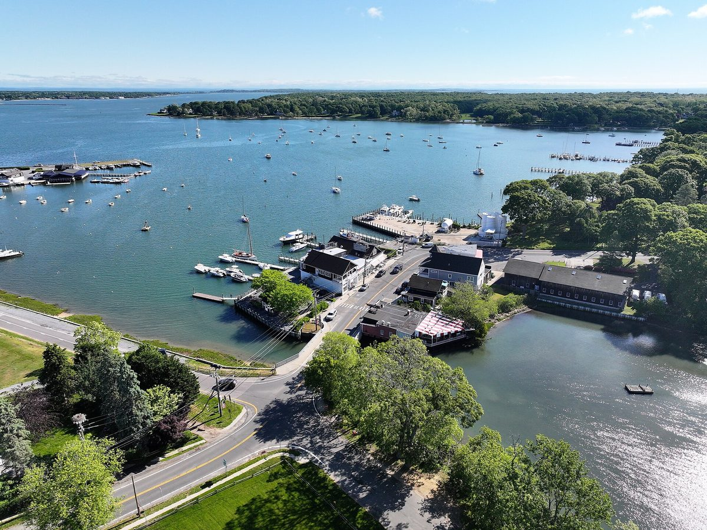

미국 뉴욕 셸터아일랜드 타운 위원회, 재활용센터 지붕 태양광 추진 권고…제안서 9건 평가해 4건 추천

국립재생에너지연구소 18개월 조사 끝 '비용 효율 사업' 결론…상위 제안 회수 12~15년·설비 수명 25~30년, 올해 필요 예산 약 15만 달러, 배터리는 빼기로
미국 뉴욕주 셸터아일랜드(Shelter Island) 타운의 녹색선택위원회(Green Options Committee)가 타운 재활용센터 지붕에 태양광 발전설비를 올리는 사업을 추진하라고 타운 이사회에 권고했다. 타운은 2023년 7월 연방 지원으로 국립재생에너지연구소(NREL)의 조사를 받게 됐고, 연구소는 18개월 동안 섬 안 후보 사업을 살핀 끝에 2022년 지붕을 얹은 재활용센터의 태양광이 비용 효율적인 사업이라고 결론 냈다. 위원회는 이 사업을 섬의 "첫 의미 있는 지속가능성 사업"이라고 부르는 조 피노라(Joe Finora) 타운 엔지니어와 함께 올여름 제안요청서를 써서 공고했고, 접수된 상세 제안서 9건을 가중 점수표로 평가해 4건의 순위를 매겼다. 상위 제안들은 회수 기간을 12~15년, 설비 수명을 25~30년으로 잡고 회수 뒤 전기요금 절감액이 10만 달러를 넘을 것으로 내다봤으며, 네 제안 모두 2027년까지 준공해 30% 연방 세액공제를 받을 수 있는 일정을 냈다. 현재 상업용 전기요금으로는 배터리가 경제성이 없다는 제안서들의 판단에 따라 위원회는 저장장치를 넣지 않기로 했고, 올해 필요한 약 15만 달러는 예산에서 바로 쓰거나 채권으로 마련할 수 있다. 피노라 엔지니어와 팀 퍼텔(Tim Purtell) 위원장은 10월 27일 타운 이사회 실무회의에서 사업을 보고하고 예산 반영을 권고했으나 이사회 결정은 아직 나오지 않았으며, 설비 용량과 총사업비도 공개되지 않았다.
시민에너지 관점
타운 위원회가 제안서 9건을 가중 점수로 따져 순위를 매기고, 지금 요금으로는 배터리가 손해라는 판단까지 직접 내린 것은 작은 섬 타운도 업체에 끌려가지 않고 스스로 공공 발전소를 설계할 수 있다는 점을 보여 준다. 회수에 12~15년이 걸리는 사업에 세금을 쓰는 것이 맞느냐는 물음이 나올 수 있지만, 설비 수명이 25~30년이어서 회수 뒤 남은 기간의 절감액은 고스란히 주민 몫이 되고, 그 이익을 더 넓게 나누는 길도 있다. 뉴욕주에는 자기 지붕이 없는 주민도 지역 태양광 발전소에 가입해 전기요금을 감면받는 공동체 태양광 제도가 있어, 공공시설 지붕 발전소를 주민이 함께 가입하거나 출자하는 구조로 키우면 세금 절약에 더해 가계의 요금 부담도 덜 수 있다. 국내 지자체도 공공시설 태양광을 공무원과 업체에만 맡기지 말고, 주민 위원회가 제안서를 평가하고 주민이 출자하거나 가입할 수 있는 몫을 처음부터 정해야 한다.
출처: Shelter Island Reporter 2026-10-28 Charity Robey 원문 보기
米ニューヨーク州シェルターアイランドのタウン委員会、リサイクルセンター屋根の太陽光推進を勧告…提案書9件を評価し4件を推薦
国立再生可能エネルギー研究所の18か月の調査で「費用対効果の高い事業」と結論…上位提案は回収12〜15年・設備寿命25〜30年、今年の必要予算は約15万ドル、蓄電池は見送り
米ニューヨーク州シェルターアイランド（Shelter Island）タウンのグリーン・オプション委員会（Green Options Committee）が、タウンのリサイクルセンターの屋根に太陽光発電設備を載せる事業を進めるようタウン理事会に勧告した。タウンは2023年7月に連邦の支援を受けて国立再生可能エネルギー研究所（NREL）の調査を受けられることになり、研究所は18か月かけて島内の候補事業を調べた末、2022年に屋根が架けられたリサイクルセンターの太陽光が費用対効果の高い事業だと結論づけた。委員会は、この事業を島の「初めての意味ある持続可能性事業」と呼ぶジョー・フィノラ（Joe Finora）タウン技師と共に今夏、提案依頼書を作成して公告し、寄せられた詳細な提案書9件を加重採点表で評価して4件に順位を付けた。上位の提案は回収期間を12〜15年、設備寿命を25〜30年と見込み、回収後の電気料金の節約額は10万ドルを超えると予測しており、4件とも2027年までに完成して30%の連邦税額控除を受けられる日程を示した。現在の商業用電気料金では蓄電池は採算が合わないという提案書の判断を受けて、委員会は蓄電設備を入れないことにし、今年必要な約15万ドルは予算から直接支出するか債券で賄うことができる。フィノラ技師とティム・パーテル（Tim Purtell）委員長は10月27日のタウン理事会の実務会議で事業を報告し予算への反映を勧告したが、理事会の決定はまだ出ておらず、設備容量や総事業費も公表されていない。
市民エネルギーの視点
タウンの委員会が提案書9件を加重採点で比べて順位を付け、今の料金では蓄電池は損になるという判断まで自ら下したことは、小さな島のタウンでも業者任せにせず自ら公共発電所を設計できることを示している。回収に12〜15年かかる事業に税金を使うのが正しいのかという疑問も出うるが、設備寿命が25〜30年なので回収後の残りの期間の節約分はそのまま住民のものになり、その利益をより広く分ける道もある。ニューヨーク州には自宅に屋根がない住民でも地域の太陽光発電所に加入して電気料金の減額を受けられるコミュニティソーラー制度があり、公共施設の屋根の発電所を住民が共に加入したり出資したりする仕組みに育てれば、税金の節約に加えて家計の料金負担も軽くできる。韓国の自治体も公共施設の太陽光を公務員と業者だけに任せず、住民委員会が提案書を評価し、住民が出資したり加入したりできる枠を最初から定めるべきだ。
出典: Shelter Island Reporter 2026-10-28 Charity Robey 原文を読む
美国纽约州谢尔特岛镇委员会建议推进回收中心屋顶光伏…评估9份方案后推荐4份
国家可再生能源实验室历时18个月调查得出"具成本效益"结论…排名靠前的方案回收期12～15年、设备寿命25～30年，今年所需预算约15万美元，不配储能电池
美国纽约州谢尔特岛（Shelter Island）镇的"绿色选择委员会"（Green Options Committee）建议镇理事会推进在镇回收中心屋顶安装光伏发电设施的项目。该镇于2023年7月获得联邦支持，得以接受国家可再生能源实验室（NREL）的调查；实验室用18个月考察岛上的候选项目后得出结论，2022年加盖屋顶的回收中心光伏项目具有成本效益。委员会与把该项目称为全岛"第一个有意义的可持续发展项目"的镇工程师乔·菲诺拉（Joe Finora）一起，在今年夏天编写并发布了方案征集书，对收到的9份详细方案用加权评分表进行评估，给其中4份排出了名次。排名靠前的方案预计回收期为12～15年、设备寿命为25～30年，回收后节省的电费将超过10万美元；4份方案都提出了在2027年前完工、可享受30%联邦税收抵免的工期。由于各方案都认为按目前的商业电价储能电池不划算，委员会决定不配置储能设备；今年所需的约15万美元可以直接从预算中支出，也可以发行债券筹集。菲诺拉和委员会主席蒂姆·珀特尔（Tim Purtell）在10月27日的镇理事会工作会议上报告了该项目并建议列入预算，但理事会尚未作出决定，装机容量和总投资额也未公开。
市民能源视角
镇委员会用加权评分比较9份方案并排出名次，甚至自行判断出按现行电价配储能电池会亏损，这说明即使是小岛小镇，也能不受企业左右、自己设计公共电站。也许有人会问，为回收期长达12～15年的项目花纳税人的钱是否合适，但设备寿命有25～30年，回收之后剩余年份节省的费用会全部归居民所有，而且还有办法把这份收益分享得更广。纽约州设有社区光伏制度，让没有自家屋顶的居民也能加入当地光伏电站并获得电费减免；如果把公共设施屋顶电站发展成居民共同加入或出资的模式，除了节省税金，还能减轻家庭的电费负担。韩国地方政府也不应把公共设施光伏只交给公务员和企业，而应从一开始就规定由居民委员会评估方案，并留出居民可以出资或加入的份额。
来源: Shelter Island Reporter 2026-10-28 Charity Robey 查看原文
Shelter Island town committee recommends rooftop solar on the town Recycling Center after ranking four of nine proposals
An 18-month National Renewable Energy Lab study found the project cost-effective; top bids show a 12-to-15-year payback and a 25-to-30-year system life, about $150,000 is needed this year, and battery storage is left out
The Green Options Committee of the Town of Shelter Island, New York, has recommended that the Town Board go ahead with a solar array on the roof of the town's Recycling Center. In July 2023 the town secured federal backing for a study by the National Renewable Energy Lab (NREL), which spent 18 months examining possible projects on the island and concluded that solar on the Recycling Center, whose roof was built in 2022, was cost-effective. Working with Town Engineer Joe Finora, who calls it the island's "first meaningful sustainability project", the committee drafted and advertised a request for proposals this summer, scored the nine detailed responses on a weighted points system and ranked four of them. The top proposals put the payback period at 12 to 15 years and the system life at 25 to 30 years, projected electricity savings of more than $100,000 after payback, and all four set timelines that would qualify for the 30% federal tax credit for completion by 2027. Because the bids found that a battery would not be cost-effective at current commercial electricity rates, the committee decided against storage, and the roughly $150,000 needed this year could come straight from the budget or from a bond. Mr Finora and committee chair Tim Purtell presented the project at the Town Board's work session on 27 October and recommended funding it, but the board has yet to decide, and neither the system's capacity nor its total cost has been disclosed.
Citizen Energy View
A town committee that scores nine proposals on weighted points, ranks them, and decides for itself that a battery would lose money at today's rates shows that even a small island town can design its own public power plant instead of leaving it to contractors. Some may ask whether taxpayers' money should go into a project with a 12-to-15-year payback, but with a system life of 25 to 30 years the savings in the years after payback belong entirely to residents, and there are ways to share that benefit more widely. New York State has a community solar scheme that lets residents without a roof of their own subscribe to a local solar plant and receive bill credits, so growing public rooftop plants into arrangements that residents can join or invest in would ease household bills on top of saving tax money. Local governments in Korea, too, should not leave public facility solar to officials and contractors alone, but should provide from the outset for residents' committees to evaluate bids and for a share that residents can invest in or subscribe to.
Source: Shelter Island Reporter 2026-10-28 Charity Robey Read the original